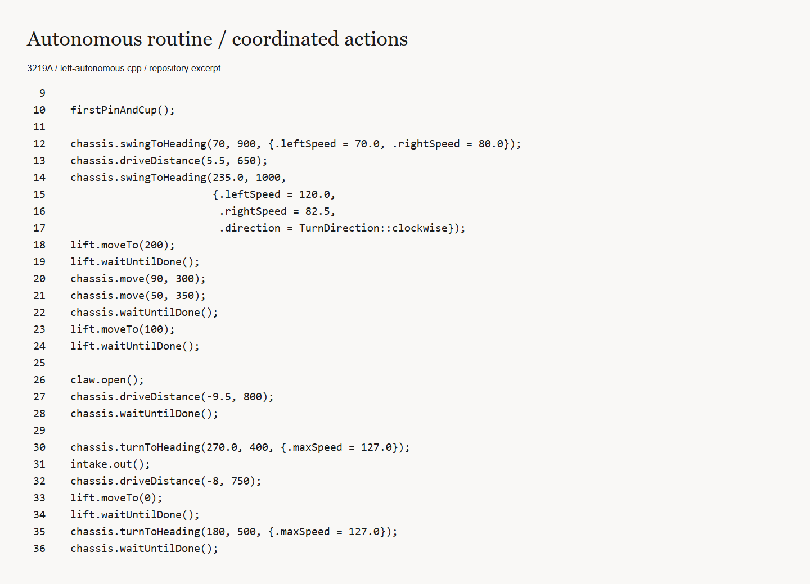
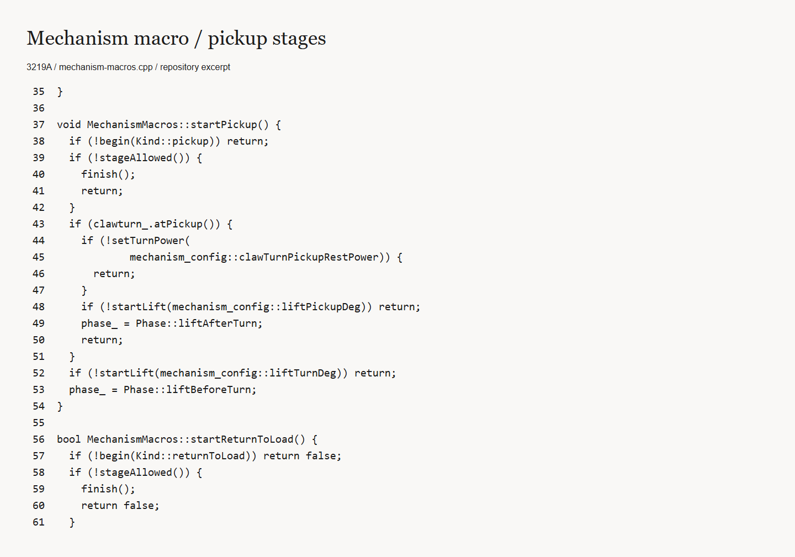
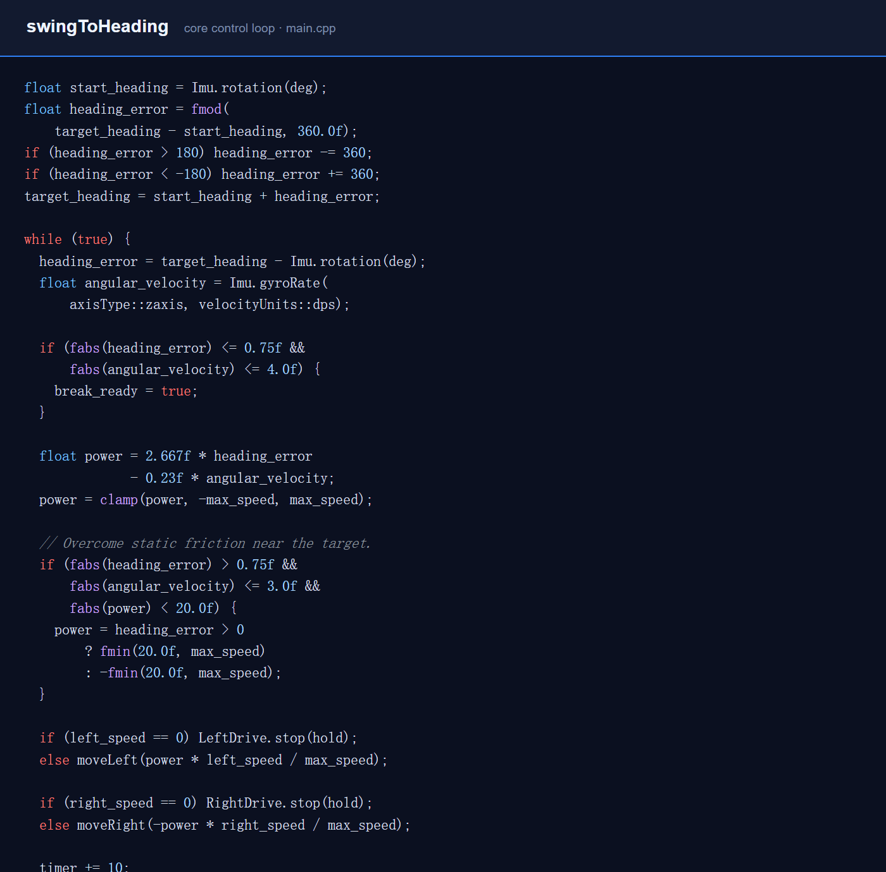

VEX control software
From commands.
To coordination.
Competition robot software connecting driver control, autonomous routines, and coordinated mechanisms.

Inside the competition code
Two excerpts from the current local 3219A source. These show software structure, not field-test results.




The engineering problem
A competition routine asks several mechanisms to work together: drive to a location, turn, raise a lift, and release a game object. Reliable behavior depends on the sequence and on what happens when a movement cannot finish.
From driving to autonomous routines
The current 3219A project separates driver control, chassis motion, mechanisms, telemetry, and autonomous routines. Four routes are organized independently so that tuning one side does not implicitly change another.
The inspected motion code includes a trapezoidal motion profile and heading control. It checks sensor availability and invalid targets before proceeding. These code paths describe the implementation, rather than a measured guarantee of match performance.
Coordinating the mechanisms
Mechanism macros break pickup and return-to-load actions into stages. Lift position, rotation, competition mode, and cancellation determine which action can run next.
In the inspected autonomous routine, lift commands and chassis movement are interleaved, with explicit waits where the sequence requires them. This makes coordination a concrete software problem.
Two teams, two seasons
I programmed for 8786A during the 2025–2026 Push Back season. At the 18th VEX Asian Championship in Chongqing, February 26–28, 2026, the team finished as a division runner-up. I joined 3219A in July 2026 for the following season.
At the 2026–2027 VEX Robotics Competition East China Regional in Jinhua, October 23–25, 3219A and its alliance partner won the high-school tournament. These are team results; my role was programming.
My role and the team
On the four-person 3219A team, I help plan software development and lead debugging. My work includes driver control, PID tuning, odometry, autonomous routines, and mechanism macros. When the robot misses an expected behavior, I check hardware first, then route and PID parameters, and finally the control logic.
The codebase also contains work from teammates and tutorials. Color recognition was not
my work. I adapted a teammate/tutorial-based move_gyro routine from distance
and heading targets to coordinate targets, but it was not used in competition after the
tracking wheels had to be removed for space.
Different versions, different experiments


Earlier work includes odometry and move-to-point experiments. The current competition README records the removal of full pose-based driving from the formal firmware. Those experiments and the current match program represent different versions.
A training score increased from 40 to 98 during iteration, but it was not an official match result. I therefore treat it as an internal tuning observation rather than a competition claim.